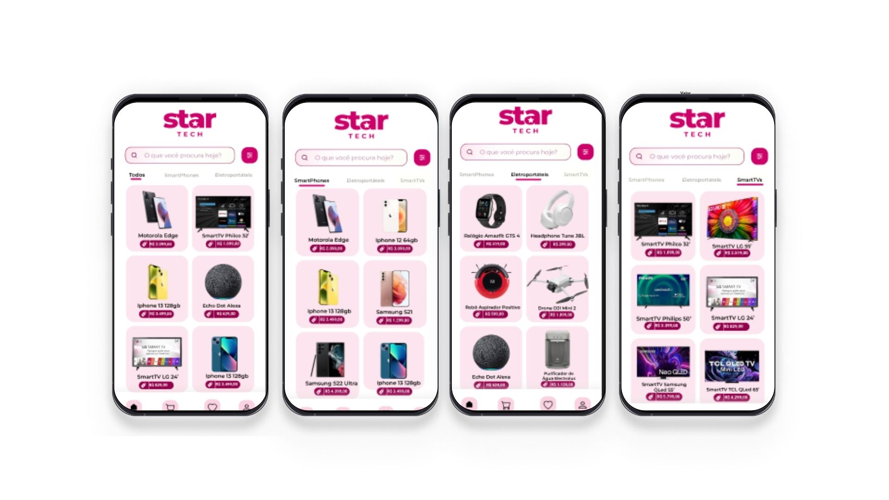

Minhas experiências em projetos:

Este foi um projeto desenvolvido em curso de Desenvolvimento Web Fullstack, onde desenvolvemos um E-commerce Mobile, o StarTech. Todo o UX/UI Design foi desenvolvido por mim, utilizando o Figma. A aplicação foi desenvolvida utilizando a linguagem Dart e o Framework Flutter, além do Banco de Dados Oracle. O projeto foi desenvolvido em grupo, como um dos projetos finais do programa de formação TodasTech, da Imá Tech em parceria com a Novo Mundo.
 Ver no GitHub